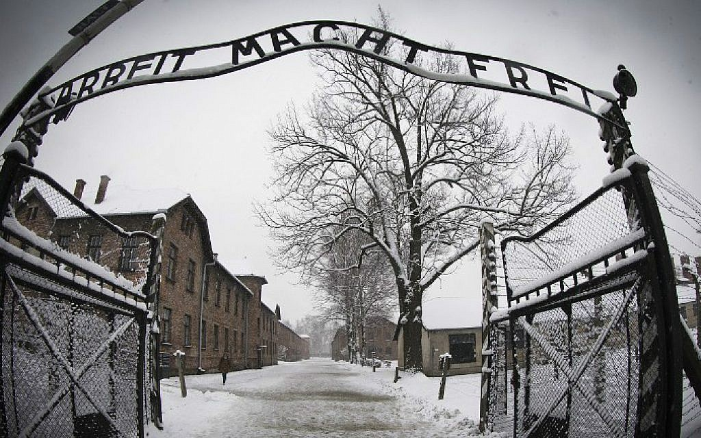

The Register of Block 4 was kept from January 20, 1942 to August 22, 1942. It contains 2100 entries referring to 2047 male prisoners of various nationalities brought to KL Auschwitz between May 1940 and August 1942. 53 prisoners were registered twice due to their movement from the block (e.g. to the camp hospital, penalty company) and back.
The tables in which the data of prisoners was entered, were drawn manually. Each page of the record was divided into seven columns described on the internal cover. Individual columns were filled with the following data: prisoner number (“Häftl. Nr.” – Häftlingsnummer), full name (“Vor.- U. Zuname” – Vor- und Zuname), date and place of birth (“Geb. Datum u. Ort” – Geburtsdatum und -ort), profession (“Beruf”), kommando in which the prisoner worked (“Kommando”), assigned from (“Eingelief.” – Eingeliefert), and the number of the room in which a prisoner was placed (“Stube”).
Source: Auschwitz-Birkenau Memorial & Museum
A presentation of the treatment of people imprisoned in Auschwitz from the moment of admission (procedures for registration, assignment and marking of a camp number, classification in the appropriate prisoner category, prisoner garments and footwear).
Everyday camp reality was also shown through reproductions of former prisoner Mieczysław Kościelniak's series A Day in the Life of a Prisoner. The block also contained enlarged camp mug shots of victims with camp number, name, date of birth, occupation (if known), date of arrival in the camp, and date of death.
Source: Auschwitz-Birkenau Memorial & Museum
Illustration of the living and sanitary-hygienic conditions for prisoners in various phases of the existence of the camp. Original camp interiors contained reconstructions of the appearance of residential rooms in the main camp and a reconstruction of part of the interior of a brick barracks.
Living conditions were also illustrated through photographs and reproductions of artwork by former prisoners. As in block 6, there were enlarged prisoner mug shots here.
Source: Auschwitz-Birkenau Memorial & Museum
Prisoners also underwent punishment in block 11, in regular cells, dark cells, or standing cells. Punishment here was usually connected with suspected sabotage, contact with civilians, escape attempts or aid to escapees, or apprehension while escaping. The windows in the normal cells had windows that were partially bricked up from the outside, and the inmates could sleep on wooden bunks. Rather than windows, the dark cells had vents covered on the outside by metal screens with air holes punched in them. Prisoners slept on the bare floor. Confinement in the dark cells lasted from several days to several weeks. Prisoners confined to death by starvation for escape attempts, or after being selected as hostages in reprisal for escapes by others, were held in the dark cells. From the beginning of 1942, prisoners were also punished by confinement in standing cells. These were four spaces measuring less than 1 sq. m. each. The only source of air was a 5 x 5 cm. opening covered with a metal grille. Entry to the standing cell was through a small opening at floor level, closed with bars and a wooden hatch. Four prisoners were confined in each of these spaces for the night. They had to go to work in the morning. The punishment was applied for periods from several nights up to several weeks in a row.
Source: Auschwitz-Birkenau Memorial & Museum
In the archives of the Auschwitz-Birkenau State Museum there is an original Record Book of block 20 hospital. It is a register of male prisoners admitted to the contagious diseases ward in block 20 in the mother camp Auschwitz I.
The document contains 321 pages. Columns, in which data on the “patients” of block 20 was entered, were filled in by hand. Each page is divided into the following 9 columns: the date of the entry (“Tag”), item no. (“Lf. No..” - Laufende Nummer), prisoner number (“Hftl. No..” - Häftling Nummer), name and surname (“Name u. Vorname” - Name und Vorname), date of birth (“Geburtsdatum”), place of birth (“Geburtsort”), block or subcamp, to which prisoner belonged (“Block”), date of leaving block 20 (“Tag des Abg.” - Tag des Abgang), date of death (“Tag des Todes”), remarks (“Bemerkungen”).
The contagious diseases ward housed prisoners suffering from typhus, starvation diarrhea, tuberculosis, meningitis, erysipelas or from general weakness. These prisoners had different fates. Many of them, were chosen to be exterminated in numerous selections made by the Lagerarzt in hospital rooms. They were slain in one room on the ground floor of block 20.
Source: Auschwitz-Birkenau Memorial & Museum
Located in the yard at the side of block 11. The condemned were led to the wall for execution. SS men shot several thousand people there—mostly Polish political prisoners and, above all, members of clandestine organizations.
Executions were also carried out here on Poles brought in from outside with death sentences, including hostages detained in reprisal for Polish resistance movement operations. Cases are known in which prisoners from other groups—Jews and Soviet POWs—were shot. The wall was dismantled in 1944, while the camp was still in existence. This did not mean the end of executions, however. Prisoners were also subjected to other form of punishment in the yard, including flogging and "the post."
Source: Auschwitz-Birkenau Memorial & Museum
This object is preserved in an original state to a large degree. Crematorium I operated from August 1940 in a prewar ammunition bunker adapted for its new function. The largest room was a morgue, which was changed into a provisional gas chamber. There were three furnaces for burning corpses in crematorium I, ordered by the camp administration from the Topf and Söhne company, which installed them.
When the gas chambers in Birkenau were going into operation, the camp authorities transferred the mass killing operation there and gradually phased out the first gas chamber. In July 1943, after the completion of the Birkenau crematoria, the burning of corpses in crematorium I ended. The furnaces and chimney were dismantled, and the holes in the roof used for introducing Zyklon B were closed. Two of the three furnaces and the chimney were reconstructed (from original parts), and several of the holes in the roof of the gas chamber were reopened.
Outside the boundaries of the Museum, the railroad siding and unloading platform (the so-called Judenramp or "old ramp") is commemorated. Transports of Jews deported for killing, and also of Roma and prisoners of other nationalities, arrived here from 1942-1944.
Source: Auschwitz-Birkenau Memorial & Museum
This object is preserved in an original state to a large degree. Crematorium I operated from August 1940 in a prewar ammunition bunker adapted for its new function. The largest room was a morgue, which was changed into a provisional gas chamber. There were three furnaces for burning corpses in crematorium I, ordered by the camp administration from the Topf and Söhne company, which installed them.
When the gas chambers in Birkenau were going into operation, the camp authorities transferred the mass killing operation there and gradually phased out the first gas chamber. In July 1943, after the completion of the Birkenau crematoria, the burning of corpses in crematorium I ended. The furnaces and chimney were dismantled, and the holes in the roof used for introducing Zyklon B were closed. Two of the three furnaces and the chimney were reconstructed (from original parts), and several of the holes in the roof of the gas chamber were reopened.
Outside the boundaries of the Museum, the railroad siding and unloading platform (the so-called Judenramp or "old ramp") is commemorated. Transports of Jews deported for killing, and also of Roma and prisoners of other nationalities, arrived here from 1942-1944.
Source: www.timesofisrael.com